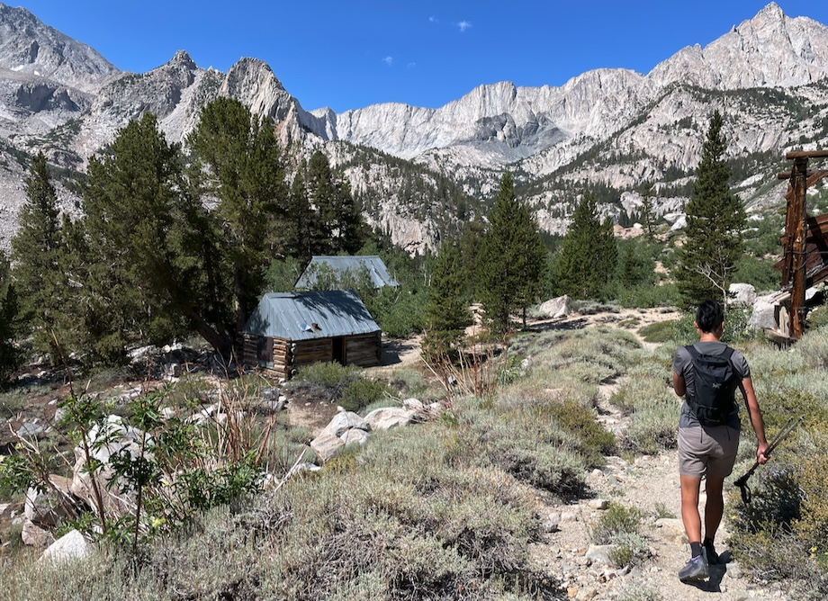

Basin Mountain

Boulderers often gaze upon Basin while pebble wrestling in the lowlands of Buttermilk Country. Finally, we send the big mountain itself, which is easy class 2 sand slopes from the back. Great for dogs!
- trailhead: Horton Lakes (37.31134, -118.61807), more or less depending on how capable your car is
- route: West slope, class 2
- total distance: 14.75 mi
- elevation gain: 6,112 ft
- time car-to-car: 10 hours 50 min
- tough for dogs?: no (if you go up the correct slope)
Beware if you use these tracks: the easier path is the northmost. The path veering more south leads to a false summit involving class 3. gpx.
>Mica’s Trip Report
Hi I’m Mica, I’m a dog. I love to wake up in the morning and jump into Alicia’s adventure Subi! The two of us and daiyi jostle down the rough Buttermilk Road and start hiking late by usual standards, 8:30am, which was a tactical error since the first 4.5 miles to Horton Lake are on an exposed and hot old mining road.
Daiyi overheated and had to lay down on the trail twice. I’m a dog, all I had to do was jump into water whenever I saw any!


At Horton Lake, we contour around the left side and go cross-country up the river basin.
After a bit of scrambling, we get to the first of two small tarns. It’s a low snow year, but water is still running under the talus! The humans fill up on water and I jump right in. It’s cold and sweet, delicious alpine juice.
It’s just a bit further to the second tarn. Here we start turning left, aiming for the west slopes of Basin.
The slopes look improbable, but it goes. The humans use their prosthetic paws (hiking poles) to make it up the sandy terrain. There’s a bit of scrambling to the top of the ridge.
Nooo! we strayed too far right (south) and ended up taking the wrong slope up to a false summit. Getting down to the saddle had a couple of class 3 moves that were tough for dogs who can’t hold jugs. I was stressed out and had to get a couple lifts.
You can see the Buttermilks from the top! Pictures don’t do it justice, but you can see the Peabodies with the naked eye. Enhance.
{kind=link}
We lounge for half an hour, naming far-away peaks and eating snack and enjoying the breeze. Soon it’s time to head back down.
Descending the slopes, taking the correct class 2 route on the way down. No sky pilots to be seen here! Enhance.
{kind=link}
Back at Horton Lake, I jump in for a swim and am surprised when everyone joins me! Finally the humans understand what I’ve been doing all day.

Near the trailhead almost at the car, Alicia sees a snake in an aspen! There’s snakes in the Sierra?? Later we find out it’s probably a Great Basin Gopher Snake, which is not poisonous. Whew.
We get back to the car before sunset and head into Bishop for a big dinner! Well, I had some kibble and napped in the trunk while the humans got burgers. What a great day! That was my 11th SPS.
comments
No comments at the moment. Hey, you could write one \o/